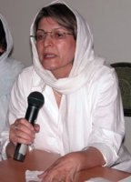

پذيرش > سایت نوشته ها > مادران و صلح / خديجه مقدم / مدرسه فمينيستي


 مادران و صلح / خديجه مقدم / مدرسه فمينيستي مادران و صلح / خديجه مقدم / مدرسه فمينيستي
12 اسفند 1386 - - نسخه قابل چاپ
از زمانی که" گروه مادران صلح " در تاریخ 13 آبان 1386 اعلام موجودیت کرد، عده ای سوال می کنند که چگونه می خواهید صلح را برقرار کنید. برخی، می پرسند رابطه صلح و جنبش زنان چیست و تعدادی از دوستان، نگرانند که اعضای کمیته مادران کمپین یک میلیون امضا نا آگاهانه به مادران صلح پیوسته اند، و آنجا هم نمی دانند که چه می کنند، ذوب سیاسیون شده اند، خود را منحل کرده اند و ... . هر چند، برخی از مطالب نوشته شده، به دلیل اینکه مستند به حرکت سه ماهه مادران صلح نبود و مرا به عنوان کسی که عضو کمپین و کمیته مادران و همچنین عضو مادران صلح هستم از برخورد فعال معاف می کرد ولی لازم دیدم از آنجا که کمپین یک میلیون امضا به نظرم تاثیر گذار ترین حرکتی است که حداقل من در چهل ساله ی فعالیت اجتماعی ام دیده ام و دوستان سایت مدرسه فمینیستی را نیز که همگی از اعضای کمپین هستند سال هاست می شناسم و به تلاش هایی که تا کنون برای ارتقا ء آگاهی های مردم به ویژه زنان در زمینه ی حقوق برابر انجام داده اند، ارج می گذارم، تصمیم گرفتم در باره ی پاره ای از ابهام های به وجود آمده که به عنوان بحث و چالش در سایت مدرسه فمینیستی مطرح شده است توضیحاتی بنویسم. شاید بتوانیم با همزبانی و همفکری و همدلی بیشتری مثل گذشته با یکدیگر همکاری داشته باشیم. امیدوارم بتوانم حسن نیت و صداقت خود را در بیان مطالب به خواننده منتقل کنم .
کمیته مادران و آش نذری
همانطور که در" بخش چالش ما "سایت مدرسه فمینستی" نوشته شده است ابتدای حرکت مادران، از نیرو گرفتن ما در کمپین به عنوان یک مادر شروع شد، بدین معنا که من وقتی به عنوان عضو کمپین در کادر پشتیبانی، هنگام دستگیری زینب پیغمبر زاده در اسفند 85، به ایستگاه متروی چیتگر رفتم و از زینب پرسیدم پدر و مادرت از دستگیریت اطلاع دارند و پاسخ شنیدم که: " مادرم فوت شده و پدرم هنوز خبر ندارد" ، انگار یک حس غریزی مرا واداشت که در پلیس امنیت گیشا به ماموران امنیتی خودم را مادر زینب معرفی کنم. وقتی هم از من شناسنامه خواستند برای آنها فرق مادر اجتماعی و مادر بیولوزیک را توضیح دادم تا جایی که برای دفاع از زینب، هم در پلیس امنیت عشرت آباد بازجویی شدم و هم قبول کردم که با دستبند وارد دادگاه انقلاب شوم تا بتوانم از زینب دفاع کنم هر چند" مادری خواسته همه زنان نیست " و چنین شد که بعد از مدت کوتاهی کمیته مادران کمپین شکل گرفت و ما قویتر از پیش به فعالیت مان ادامه دادیم و جوان ها با دلگرمی بیشتری پیگیر خواسته های مشترک مان شدند؛ پدر و مادرهای اعضاء جوان کمپین هم، وقتی ما زنان سن و سال دار و با تجربه را دیدند، با آرامش، فرزندانشان را در راهی که برگزیده بودند، همراهی کردند و الحق کمیته مادران سپر بلایی شد برای جوانان کمپین به طوری که هر کس دستگیر می شد قبل از حضور پدر و مادر اعضا، این مادران کمپین بودند که در کلانتری ها و دادستانی های حتی درشهرستان ها، از عضو دستگیر شده حمایت می کردند و همچنان به وظایف شان که خود طراحی و به عهده گرفته اند، پایبندند.
کمیته مادران به صورت خود جوش حالا با هرنامی که برایش بگذاریم کمیته، کار گروه، هسته تشکیل شده در چارچوب سه سند کمپین به صورتی مستقل از طرفی و همبسته با سایر اعضا از طرف دیگر به کار خود ادامه می دهند. تمام کوشش اولیه برای شکل گیری کمیته ها تسهیل در کارها بود و بازبودن رفت و آمد افراد به کمیته ها و جذب پتانسیل های بیشتر به کمپین بدون آن که تصوری از سازمان و تشکل یابی در کار باشد. توجه به همین موضوع بود که کمیته مادران در تصمیم گیری مثلا پختن آش نذری اعضا ء کمیته با عنوان کمیته دخالتی نداشت و فقط تعدادی از مادران به انجام نذر گوهر عزیز ( مادرجلوه ) کمک کردند، یعنی با همه احترامی که به عقاید اعضا می گذاریم، به هیچ عنوان نپذیرفتیم که این حرکت یا هر حرکت دیگری که ممکن بود نشانه ای از ایدئولوژیکی شدن فعالیت ها و شکلی از سازمانی شدن فعالیت کمیته در کمپین تصور شود به نام کمیته مادران ثبت شود، شاید یکی ازموارد چالش برانگیز نیز همین مسئله بود که چرا حرکتی که کمیته مادران کمپین مسئولیت برگزاری آن را نپذیرفته در سایت تغییر برای برابری به نام مادران کمپین درج می شود که جواب گرفتیم خبر آش نذری تغییر کرده و با خبر اولیه ای که اعضای رسانه در سایت گذشته بودند تفاوت داشته است!
از کمیته مادران کمپین تا مادران صلح
از آنجایی که مادری اجتماعی، حد و مرزی جنسیتی نمی شناسد، دانشجو و کارگر و معلم، سیاسی و... همه فرزندان ما ملت هستند، تعدادی از مادران کمپین، بعد از دستگیری منصور اسانلو به دیدار مادر و همسر اسانلو که هر دو از اعضاء کمپین بودند رفتیم و نامه ای در جهت حمایت و همدردی نوشته شد که مورد انتقاد برخی از اعضاء کمپین قرار گرفت و ما متوجه شدیم که کمیته مادران کمپین حمایت ما را بیش از هر چیز به حمایت از اعضای کمپین محدود می کند و کاملا هم درست بود. خواسته های مشترک حداقلی ما در کمپین، این اجازه را به ما نمی داد و دلیل موفقیت کمپین هم همین خواسته های حداقلی است که زنان از هر طبقه و با هر بینشی جذب کمپین شده اند.
از طرفی دانشجویان امیرکبیر به دلیل حمایت از سه دانشجوی زندانی که متاسفانه هنوز هم آزاد نشده اند، دستگیر شدند و من که خود، روزهای تنهایی را زمانی که پسرم در زندان بود تجربه کرده بودم در کنار مادران دانشجویان دستگیر شده قرار گرفتم و با آنان همراهی کردم و احساس کردم که در ایران مرد سالار، مادری قدرتی دارد که ما پیش از این از آن بی خبر بوده ایم. بدین ترتیب به فکر تشکیل گروهی از مادران افتادم تا بتوانیم از خودمان و همه ی فرزندان مان جدا از جنسیت و قومیت و بینش، به صورتی مادرانه، مسالمت آمیز و صلح طلبانه دفاع کنیم. طبیعی است لازم بود ایده اول با تک تک دوستان پیشکسوت در فعالیت های اجتماعی، درمیان گذاشته شود و از دانش و تجربیات آنان استفاده گردد تا طرحی پخته ، مناسب زمان و مکان و شرایط حاکم طراحی شود.
در ابتدای شهریور 86 فقط ایده را با دوستانم در میان گذاشتم و هیچ طرحی از قبل آماده نکردم، چرا که به دموکراسی معتقدم گر چه اعتقاداتم ممکن است با رفتارهایم تفاوت داشته باشد ولی حداقل سعی می کنم و با شجاعت می گویم خیلی خیلی سعی می کنم، خشونت را با خشونت پاسخ ندهم و این را هم می دانم که اغلب موفق نمی شوم و اگر سکوت و خشونت گفتاری را مهار می کنم با حرکات اعضا ء بدنم حتی با نگاهم خشونت روا می دارم و کاملا با " فرانسواز سیرونی" موافقم که کسانی که در کشور های استبداد زده و دیکتاتوری به دنیا می آیند و در شرایط ناسالمی، زندگی می کنند حتی اگر زندان نرفته باشند، خودشان متاسفانه اغلب، هم شکنجه گرند و هم قربانی. بهر ترتیب، دوستان عزیز و طرف مشاوره ی من، که اکثریت شان، بیش از من دانش و تجربه فعالیت های اجتماعی داشتند نظرات سازنده ای دادند و ترجیح دادند صدای سومی باشند که هم با سیاست های جنگ افروزان مخالفت کنند و فرهنگ صلح را ترویج نمایند و هم از حقوق خود و فرزندان شان، دفاع کنند و چنین شد که" مادران صلح" با تعریف جدید از صلح که بدون امنیت، عدالت و برابری، معنایی ندارد با ساختاری فروم گونه و افقی با استفاده از تجربه های همه مادران در کمپین و هم اندیشی و زنان صلح شکل گرفت و اسامی پیشنهادی من و سایر دوستان از جمله" مادران صلح و برابری" کنار گذاشته شد. نه اینکه برابری فراموش شود، برابری و عدالت، در دل صلح آشکارا دیده می شود. اگر به بیانیه اعلام موجودیت ما، مادران صلح، دقت کافی بشود نه از روی " اخبار رسیده "و" شنیده ها "به روشنی بیان شده است که:" ما به هر آنچه که امنیت سیاسی، اقتصادی و اجتماعی را به خطر اندازد اعتراض داریم" .
فزون بر این، جایزه نوبل صلح که به خانم شیرین عبادی تعلق گرفت، افتخاری برای همه ی مردم ایران شد برای فعالیت های شجاعانه و خستگی ناپذیر حقوق بشری و صلح طلبانه خانم عبادی بوده است. همه می دانیم که خانم عبادی پیشنهاد" شورای ملی صلح " را در روز 28 آبان 1386 در یک کنفرانس مطبوعاتی در کانون مدافعان حقوق بشر اعلام کردند و پس از آن "کمیته موقت صلح " برای کمک به تشکیل" شورای ملی صلح" به وجود آمد، و من هم با پیشنهاد خانم عبادی ، افتخار همکاری با اعضاء کمیته را همچنان تا تشکیل شورای ملی صلح به عنوان یک زن هوادار محیط زیست دارم.
دوستان سوال می کنند آیا واقعا ایران در تهدید جنگ به سر می برد ؟
من به عنوان یکی از اعضای گروه مادران صلح، با توجه به بیانیه هایمان از ابتدای اعلام موجودیت تا کنون و فعالیت های حقوق بشری اعضا گروه به خود حق می دهم از این دوستان سوال کنم :
آیا کشور ما ایران امروز در شرایط صلح بسر می برد ؟ وقتی به خاطر جمع آوری امضا برای تغییر قوانین، دختران جوان را که می خواهند به عنوان یک انسان کامل در قانون به رسمیت شناخته شوند ، بازداشت می کنند ( به یاد راحله و نسیم، عزیزان مان در بند و با آرزوی آزادی هر چه سریعتر آنان ) و احترام شادفر، مادری 62 ساله و معلم بازنشسته را، که همه ما مدیون خدماتش هستیم به حبس محکوم می کنند آیا صلح وجود دارد ؟ آیا چشممان را در مورد، نقض حقوق بشر دانشجویان، کارگران، اقلیت های مذهبی، اقلیت های قومی و نواندیشان و دگراندیشان باید ببندیم ؟
آیا وقتی پزشک جوانی که برای خدمت به دورافتاده ترین نقاط کشور رفته به جرم اینکه با مردی در روز روشن در پارک نشسته و صحبت می کند کشته می شود، آیا وقتی سنگسار ، قطع دست و پا، پرتاب از بلندی، اعدام، حتی اعدام کودکانی که زیر 18سال مرتکب جرم شده اند، وجود دارد صلح برقرار است ؟ وقتی اکثریت مردم زیر خط فقر هستند، و تحریم های اقتصادی آنان را هر روز فقیر تر می کند صلح چه معنایی دارد ؟
وقتی به خاطر شرایط نه جنگ، نه صلح بخش مهمی از دریای خزر بخشیده می شود، زنان باید سکوت کنند ؟ آیا قیمت شیرخشک را این روز ها می دانید ؟ که در عرض یکماه با تحریم ها ی اقتصادی صورت گرفته از 2700 تومان به 4100 تومان افزایش یافته ؟ آیا ما نباید از آثار مخرب انرژی هسته ای حداقل از منظر اقتصادی و محیط زیستی حرف بزنیم؟ نگران نباشید، همه در یک جهت حرکت می کنیم با روش های مختلف. بگذارید جامعه مدنی بی شکل ایران اندام متناسبی پیدا کند.
فراموش نکنیم، دغدغه های زنان فقط حقوق زنان نیست، و کمپین خواسته های حداقلی ما را مطرح می کند. روشی که کمپین در پیش گرفته یعنی گفتگو ، آموزش و جمع آوری امضا ء ، در ارتقای جنبش دموکراسی خواهی در جامعه کنونی ما نقش مهمی دارد و نباید این را کتمان کنیم. روز 5 شهریور وقتی جلوی درهای بسته موسسه رعد، در خیابان، کمپین را افتتاح کردیم هرگز فکر نمی کردیم که این حرکت چنین تاثیر گذار باشد و حالا باید خیلی خوشحال باشیم زیرا اگر همین امروز هم اعلام کنند، جمع آوری امضا جرم است و اعضا اولیه کمپین هم اعلام کنند که کسی امضا جمع نکند، کمپین به حرکت خود ادامه خواهد داد، چرا که در حال حاضر، کمپین، هزاران متولی دارد که می دانند چه می خواهند و مثل ما فمینیست های نسل گذشته خواسته های خود را فدای خواسته های بزرگتر! نمی کنند.
اما نباید مساله مهمی را هم فراموش کنیم که در کنفرانس پکن 1995 دغدغه های زنان جهان که ما هم جزو آن هستیم در 12 محور طبقه بندی شد که یکی از آنها حقوق زنان بود ، قاعدتا امروز باید دغدغه های دیگری هم به آن اضافه شده باشد . منظورم این است که توجه کنیم این بار برای جبران اشتباهات ما قدیمی ها ، زنان جوان از اینطرف بام به پایین پرتاب شوند. و نگران نباشند که تعدادی از زنان برای صلح، حفظ محیط زیست، ورزش و... هم وقت می گذارند و به این فرصت هم توجه کنند که بحث حقوقی زنان با فعالیت در سایر جنبش ها همانطور که تا کنون هم شاهد بوده ایم ، موجب تقویت جنبش زنان هم می شود .
اگربه حرکت صلح خواهانه ای که در ایران هم دارد شکل می گیرد به وسیله مادران صلح و کمیته موقت صلح و در آینده شورای ملی صلح توجه کنیم، این را به صورت روشنی مشاهده می کنیم. برای مثال دو نفر از کمیته مادران کمپین و به طور کلی از کمپین ( فرخنده جبارزادگان و خدیجه مقدم ) تا کنون، در مادران صلح فعال بوده ایم ولی در تمام برنامه های عدالتخواهانه و برابری خواهانه جنبش زنان، اکثریت مادران صلح با عشق و محبت شرکت کرده اند. البته این حمایت مادران صلح را هرگز به حساب ما دو نفر، در تاریخ جنبش زنان ثبت نکنید، مادران صلح ، به عینه می ببینند که قوانین تبعیض آمیز چه تاثیر وحشتناکی بر روی زندگی زنان گذاشته و خود مصداق های عینی آن هستند، شاید ما فقط توانسته باشیم تلاش کنیم تا ارتباط سالمی بین " گروه مادران صلح " و" جنبش یک میلیون امضا " به وجود بیاید. و این نوشتار، نمونه ای از این تلاش است. مگر ما به تکثر اعتقاد نداریم ؟ پس چرا تا گروهی سربلند می کند تا پا بگیرد می خواهیم زمین اش بزنیم؟
مادران صلح ، به عنوان گروهی از مادران معرفی شده اند که سال های نو جوانی و جوانی شان را برای مبارزه با دیکتاتوری شاه و امپریالسم هزینه کرده اند و در پیروزی انقلاب نقش مهمی داشته اند به طوری که هویت فردی خود را فدای هویت جمعی کرده و حقوق ناچیز خود را نیز از دست دادند . مادرانی که در دوران جنگ فرزندان شان را در شرایط سخت و طاقت فرسا با تحریم های اقتصادی بزرگ کرده اند و اینک شاهد هزینه شدن آنان هستند. آنان ، در انقلاب و جنگ ، فرزندان زیادی را برای مبارزه با دشمن خارجی و پس از پیروزی انقلاب و جنگ فرزندان بیشماری را برای مبارزه با دیکتاتوری ، در زندان ها ، از دست داده اند و اینک سایر فرزندان جوان شان هم در معرض تهدید و شکنجه ، برای خواسته های قانونی و حداقلی خود هستند .
آنان ، ضمن اینکه به هیچ دولت بیگانه ای حق دخالت در امور داخلی کشور را نمی دهند ، معتقدند به روش مسالمت آمیز و صلح طلبانه باید اصول حقوق بشر که ایرانیان پایه گذار آن بوده اند در ایران رعایت شود و فرهنگ صلح به جای فرهنگ خشونت و جنگ طلبی در ایران ترویج پیدا کند و خود در این راستا با اهداف و فعالیت های تعریف شده و مکتوب، پیشقدم شده اند، نه اینکه خود را مادر و ریشه صلح خواهی در ایران بدانند و بگویند، قبل از ما، کسی در این زمینه فعالیتی نداشته است بلکه مادران صلح به عنوان گروهی از مادرانی که آرزوی صلح را دارند معرفی شده اند با قبول اینکه صلح و حقوق بشر دو مقوله جدایی ناپذیرند .
به عقیده ی من صلح خواهی مادرانه در تاریخ کهن ایران ریشه ای چند هزار ساله دارد و "سیندخت" به واقع، مادر صلح است که هم کشورش را از خطر جنگ نجات داد و هم از حق و حقوق دو جوان عاشق دفاع کرد و موفق شد و حکیم ابولقاسم فردوسی چه زیبا سیندخت را منادی صلح در شاهنامه ، معرفی کرده است .
برای برقراری صلح در دنیای امروزی که شاید آرزویی دست نیافتنی باشد، راهی طولانی و دشوار در پیش روی صلح خواهان جهان قرار دارد که ابتدا با ترویج فرهنگ صلح و حقوق بشر از پایین به بالا و فشار به حکومت ها از بالا آغاز شده است .
مادران صلح با عقاید و بینش های مختلف ، تا جایی که یکی برای دفاع از مردم مظلوم فلسطین، قصد جنگیدن با اسرائیل و آمریکا را داشته و دیگری ، شعار" نه موشک قسام و نه بمباران غزه"را سر می دهد. یکی آرزو می کند اگر قوانین تبعیض آمیز تغییر کند آشی بپزد تا همه زنان ایرانی بتوانند پیاله ای از آن را نوش جان کنند و دیگری سرسختانه مخالف اعدام است و تلاش می کند حتی بتواند برای مدتی کوتاه اعدام یک انسان را به تعویق بیاندازد تا شاید راهی برای نجات جان او و یا حداقل فضایی برای مخالفت با اعدام به وجود بیاید .
نگاهی به فعالیت های مادران صلح در مدت کوتاه سه ماه نشان از اراده و پشتکار و اعتقاد به اصولی است که برای اجرای آن هم قسم شده ایم .
الف -فعالیت های ضد جنگ مادران صلح که متن کامل بیانیه ها را در پایگاه موقت اطلاع رسانی مادران صلح می توانید مطالعه بفرمایید.www.motherspeace.blogfa.com
1- بیانیه اعلام موجودیت
2- نامه به مسئولین حکومتی در مورد مخالفت با جنگ و انرزی هسته ای، تحریم و شرایط نه جنگ، نه صلح و اعتراض به نقض حقوق بشر که 521 نفر از مادران ( معلم ، پزشک ، خانه دار ، نویسنده ، استاد دانشگاه ، شاعر ، هنرمند ، کارگر ، مهندس فنی ، فعال اجتماعی ، روزنامه نگار ، مادران دانشجویان زندانی ، مادران شهید ، مادران کرد – آذری – بلوچ – عرب – ترکمن و...) امضا کردند .
3- نامه به مردم ، در مورد شرایط بحرانی به وجود آمده و هشیاری مردم و مخالفت با جنگ
4- نامه به شورای امنیت برای اعتراض به تحریم های اقتصادی و جلو گیری از تصویب قطعنامه سوم
5- تجمع اعتراضی در مقابل سازمان ملل برای جلوگیری از کشتار بیرحمانه مردم بی دفاع و زنان و کودکان فلسطینی و اسرائیلی .
6- بر گزاری سمینار صلح و بر رسی آثار تخریبی جنگ از منظر روانشناسی – اقتصادی و جامعه شناسی .
7- محکومیت ترور خانم بی نظیر بوتو و هر گونه خشونت .
ب – در اعتراض به نقض حقوق بشر
1- اعتراض به بازداشت های دانشجویان و همراهی با خانواده های آنان در دادگاه انقلاب
2- تلاش های فراوان برای جلوگیری از اعدام راحله زمانی – زندانی عادی
3 دیدار با خانواده دکتر زهرا بنی یعقوب و پیگیری همراه برادر زهرا برای انتقال پرونده به تهران
4-شرکت در برنامه انجمن صنفی روزنامه نگاران و قرائت بیانیه حمایتی از مریم حسین خواه و جلوه جواهری از اعضای کمپین .
5- دیدار با خانواده راحله عسگری زاده و نسیم خسروی از اعضای زندانی کمپین برای همدردی .
6-پیگیری توقف حکم اعدام زنان و کودکانی که زیر 18 سال مرتکب جرم شده اند، در قوه قضائیه .
7- پیگیری تصویب قانون لغو اعدام کودکانی که زیر 18 سال مرتکب جرم شده اند از طریق مجلس و کمیسیون قضایی مجلس .
8 – تجلیل از مادر اسانلو کارگر زندانی در جلسه عمومی مادران صلح
این مادران با همه ی تفاوت های شان یک وجه مشترک دارند و آن اینست که همه برای تغییر بسوی توسعه ی متوازن و پایدار ، تلاش می کنند. اکثریت آنان از جان و مال خود گذشته اند برای یک نوک سوزن پیشرفت و توسعه و سربلندی ایران به معنای واقعی.
آیا ما لایق شرکت در این حرکت مقدس هستیم ؟
آیا روزی در ایران جنبش صلحی قوی به وجود خواهد آمد ؟
آیا روزی فرا خواهد رسید که زن و مرد ، پیر و جوان و کودک با هر بینش و مذهبی ، از هر قومیتی ، با حقوقی برابر ، سرود صلح سر دهیم ؟
با این آرزو، روزی ، تن های خسته مان را به خاک خواهیم سپرد تا شاید ، درختان زیتونی در آن بار ور شوند و فرزندان مان زیر سایه ی آن رشد نمایند .
منبع :مدرسه فمينيستي
ارسال به
بالاترین
،
توییتر
،
فریندفید
،
فیسبوک
در همين بخش :
 یک خبر تلخ؟ یک قانونشکنی؟ یک تصمیم بخشنامهای جدید؟ یک خبر تلخ؟ یک قانونشکنی؟ یک تصمیم بخشنامهای جدید؟
چرا بایست به سکسوالیته پرداخت؟ / نفیسه آزاد
آزارجنسی خانگی؛ «قربانی» نه، «نجات یافته»
زنان، بزرگترین بازندگان بهار عرب
سانسور از دیدگاه جنسیتی/الهه امانی
ديگر بخش ها :
طرح یک میلیون امضا
|
مقالات
|
سایت نوشته ها
|
اخبار
|
گزارش كمپين
|
گفت و گو
|
علیه سکوت
|
كوچه به كوچه
|
نامه های شما
|
گزارش ویژه
|
گفتگو با اعضا
|
ویژه سالگرد کمپین
|
تصویر برابری
|
دل آرام علی
|
تریبون
|
مقالات
|
تاریخ شفاهی
|
خارج از چارچوب
|
کتابخانه
|
درباره کمپین
|
کمپین در شهرها
|
کمپین در بند
|
صدای تغییر
|
ویژه 22 خرداد
|
لایحه حمایت از خانواده
|
گالری
|
عشا مومنی
|
امیر یعقوبعلی
|
خدیجه مقدم
|
راحله عسگری زاده و نسیم خسروی
|
پروین اردلان،جلوه جواهری، مریم حسین خواه، ناهید کشاورز
|
زینب پیغمبرزاده
|
سعیده امین، سارا ایمانیان، محبوبه حسین زاده، ناهید کشاورز و همایون نامی
|
احترام شادفر
|
نسیم سرابندی زاده،فاطمه دهدشتی
|
وبلاگ مهمان
|
پرونده خرم آباد
|
دستگیری ها
|
مریم مالک
|
پرستو اللهیاری
|
مهرنوش اعتمادی
|
سمیه رشیدی
|
Other Languages
|
همراهان
|
«فراخوان کمپین ده روز با بهاره هدایت»
| English
|